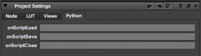
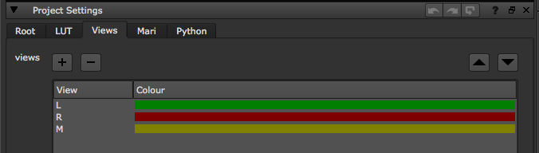

Using the nuke.add...() functions described below, you can call Python functions automatically when various events (such as creating a node or loading a script) happen in NUKE.
You can use all the nuke.add...() functions in your init.py or menu.py files. This way, the code is considered part of your NUKE environment and does not vary from script to script.
All the nuke.add...() functions take the same arguments, for example:
nuke.addOnCreate (callable, args=( ), kwargs={}, nodeClass='*')
Where:
callable is a Python callable, such as the name of a defined function.
args is the list of arguments. These should be in parenthesis. For example:
nuke.addOnCreate(nuke.tprint, ('what to print')).kwargs is a list of arguments given as keyword+value pairs. For example:
nuke.addOnCreate( nuke.tprint, ( 'a', 'b' ), { 'sep': ',' } )nodeClass the code is only called if nuke.thisNode().nodeClass() equals this string. For example:
nuke.addOnCreate(nuke.tprint, ('Creating Write'), nodeClass='Write')The default value of ‘*’ means that this is called for all nodes.
During the callback, there is a context node (the affected node), which is examined using nuke.thisNode(). For knobChanged, there is also a context knob which you can get using nuke.thisKnob().
For many of the nuke.add...() functions, such as onCreate, there are also knobs with the same name. These knobs fall into two categories:
- Visible knobs - These are the knobs that the artists are expected to edit. They can be seen on the Python tab of some Properties panels. The visible knobs include onScriptLoad, onScriptSave, onScriptClose, beforeRender, beforeFrameRender, afterRender, and afterFrameRender.
- Hidden knobs - These are not visible in any Properties panels, but can be set using Python. These are intended to allow you to define the behavior of gizmos. Artists should not set these knobs, as the user settings override any saved gizmo settings. Hidden knobs include onCreate, onDestroy, knobChanged, updateUI, and autolabel.
If there are many callbacks registered, code attached to knobs is always called first before the nuke.add...() functions. (For example, code put in the onCreate knob is called before the nuke.addOnCreate() function.) In most cases, it is then followed by all the nuke.add...() functions with a matching nodeClass in the order they were added, and finally the ‘*’ ones, also in the order they were added. Note that the addAutolabel() and addFilenameFilter() functions are exceptions to this rule, however, as they are called in reverse order.
All the add callbacks calls have a corresponding remove callback call.
nuke.addOnUserCreate(function)
nuke.removeOnUserCreate(function)
This is executed whenever a node is created by the user using the NUKE graphical user interface (GUI). It is also called at start-up on the Root and Viewer nodes. It is not called when loading existing scripts, pasting nodes, or undoing a delete.
You can use this code to change the default values of knobs, to add user knobs, and to perform other actions to preset nodes as users see them.
nuke.addOnUserCreate is run immediately after the knobs are set to their default values (including knobDefault values). It is run before onCreate. If nuke.addOnUserCreate() is not used, nuke.tcl(“OnCreate”) is called for backward compatibility.
node.knob('onCreate')
nuke.addOnCreate(function)
nuke.removeOnCreate(function)
This is executed when any node is created, for example, when loading a script, pasting a node, selecting a menu item, or undoing a delete. Note that if an onCreate function is defined before a script is loaded, it is run for each node. This is because the nodes are created while the script is loaded. When a group (including the root) is created with a number of inner nodes, onCreate is called first on the inner nodes, then on the group itself. For root, this is run when any script is loaded (see onScriptLoad below) or when File > New is selected. For the preferences and Python knob panels, this is run when they are created.
For example, the following code makes the creation of every node print OnCreate called for [node name] in the terminal:
nuke.addOnCreate(lambda: nuke.tprint("OnCreate called for "+nuke.thisNode().name()))
onScriptLoad
root.knob('onScriptLoad'), nuke.addOnScriptLoad(function), nuke.removeOnScriptLoad(function)
root.knob('onScriptLoad')
nuke.addOnScriptLoad(function)
nuke.removeOnScriptLoad(function)
This is executed when any script is loaded, immediately after the onCreate for the root. Note that it is NOT run for new scripts.
The onScriptLoad knob is visible in the Project Settings > Python tab.
root.knob('onScriptSave')
nuke.addOnScriptSave(function)
nuke.removeOnScriptSave(function)
These are run when the user tries to save a script. If this changes the script name, that is the name the script is saved under. The onScriptSave knob is visible in the Project Settings > Python tab.
root.knob('onScriptClose')
nuke.addOnScriptClose(function)
nuke.removeOnScriptClose(function)
These are run when the user exits NUKE or closes a script, and by the scriptClear() function. They are run immediately before the onDestroy for the root.
The onScriptClose knob is visible in the Project Settings > Python tab.
node.knob('onDestroy')
nuke.addOnDestroy(function)
nuke.removeOnDestroy(function)
These are executed when any node is deleted, including when the creation of a node is undone. They are called on the root when a script is closed, or when the user exits NUKE. They are NOT run for the Preferences or Python knob panels, or if NUKE crashes.
For groups and the root, this is run before all the children.
node.knob('knobChanged')
nuke.addKnobChanged(function)
nuke.removeKnobChanged(function)
These are executed when the user changes the value of any knob when the control panel is open. They are not called recursively. You can find the knob that was changed by using nuke.thisKnob().
knobChanged allows you to make gizmos with knobs that have effects like enabling, disabling, or presetting other knobs. To access the knob that was changed, use nuke.thisKnob().
Note
The purpose of knobChanged is to update the control panel appearance. You cannot use it ‘track’ knobs (for example, to keep a database up-to-date with the values of all the knobs), as it is not called when the Properties panel is closed. To track knobs, use updateUI as described below.
When the user opens or closes the properties panel, or when they change the input connections while the panel is open, you can call knobChanged with the dummy knobs named showPanel and inputChange. If you are disabling, or otherwise altering values of knobs on changes, you probably need to respond to showPanel to get the panel into the correct state for the current settings when it is opened. For example, you could do:
# if slider is zero, disable the checkmark:
n = nuke.thisNode()
k = nuke.thisKnob()
if k.name()=="slider" or k.name()=="showPanel":
n['checkmark'].setEnable(n['slider'].getValue()!=0)
You can use nuke.addKnobChanged to gang the gain and gamma sliders of the selected ColorCorrect node so that, if the user adjusts one slider, the other is automatically set to the same value. To gang the sliders, use the following code:
def gangGammaGainSliders():
n = nuke.thisNode()
k = nuke.thisKnob()
if k.name() == "gamma":
n['gain'].setValue(k.value())
elif k.name() == "gain":
n['gamma'].setValue(k.value())
nuke.addKnobChanged(gangGammaGainSliders, nodeClass="ColorCorrect")
node.knob('updateUI')
nuke.addUpdateUI(function)
nuke.removeUpdateUI(function)
These are run on every node after any changes to the script. This is done as a low-priority process during idle time and thus NUKE may have already started calculating the image for the Viewer before updateUI is called. Therefore, updateUI should not make the kind of changes to the script that change the image (otherwise, the Viewer would have to restart).
updateUI runs just before autolabel and after knobChanged. To avoid running this on every node, NUKE examines what updateUI looks at (such as the frame or view number) to decide whether or not to run it. If the function does not refer to the frame or view number, NUKE only calls it when the knob values on the node are changed, and not if the frame or view changes.
node.knob('autolabel')
nuke.addAutolabel(function)
nuke.removeAutolabel(function)
These are run immediately after updateUI and return the string to draw the node in the Node Graph. If the autolabel knob is not blank and returns anything other than None, the return value is displayed on the node. Otherwise, the nuke.addAutolabel() functions are called in reverse order and the first one to return anything other than None is used. If all of them return None, then nuke.thisNode().name() is used.
For backward compatibility, NUKE does addAutolabel(__main__.autolabel) on start-up.
write.knob('beforeRender')
nuke.addBeforeRender(function)
nuke.removeBeforeRender(function)
These are run prior to starting rendering in execute(). If they throw an exception, the render aborts. They can be used to create the destination directory or communicate with your render farm, for example. The beforeRender knob (before render on the GUI) is visible on the Write node’s Render tab.
Tip
By default, NUKE doesn’t create directories when rendering files. If you have a Write node whose file control points to a directory that doesn’t exist, the render fails. However, you can change this behavior by using the function nuke.addBeforeRender() to register a function that creates the necessary directory prior to rendering the first frame. Here’s an example of how to do so:
Create a file called init.py in your plug-in path directory (if one doesn’t already exist).
Open the init.py file in a text editor and add an entry in the following format:
def createWriteDir():
import nuke, os, errno
file = nuke.filename(nuke.thisNode())
dir = os.path.dirname( file )
osdir = nuke.callbacks.filenameFilter( dir )
# cope with the directory existing already by ignoring that exception
try:
os.makedirs( osdir )
except OSError, e:
if e.errno != errno.EEXIST:
raise
nuke.addBeforeRender(createWriteDir)
write.knob('beforeFrameRender')
nuke.addBeforeFrameRender(function)
nuke.removeBeforeFrameRender(function)
These are run prior to starting rendering of each individual frame. If they throw an exception, the render aborts. They can be used to create the destination directory or communicate with your render farm, for example. The beforeFrameRender knob (before each frame on the GUI) is visible on the Write node’s Render tab.
write.knob('afterFrameRender')
nuke.addAfterFrameRender(function)
nuke.removeAfterFrameRender(function)
These are run after each frame is finished rendering. They are not called if the render aborts. If they throw an exception, the render aborts. They can be used to copy each frame to a digital video recorder (DVR), for example. The afterFrameRender knob (after each frame on the GUI) is visible on the Write node’s Render tab.
write.knob('afterRender')
nuke.addAfterRender(function)
nuke.removeAfterRender(function)
These are run after rendering of all frames is finished. If they throw an error, the render aborts. They are useful for finishing up a copy to a digital video recorder (DVR) or for communicating with a render farm, for example. The afterRender knob (after render on the GUI) is visible on the Write node’s Render tab.
nuke.addAfterBackgroundRender(function)
nuke.removeAfterBackgroundRender(function)
Add code to execute after any background renders. The call must be in the form of:
def foo(context):
pass
Please be aware that the current NUKE context does not make sense in the callback, for example nuke.thisNode returns a random node.
nuke.addBackgroundFrameRender(function)
nuke.removeAfterBackgroundFrameRender(function)
Add code to execute after each frame of a background render. The call must be in the form of:
def foo(context):
pass
Please be aware that the current NUKE context does not make sense in the callback, for example nuke.thisNode returns a random node.
nuke.addFilenameFilter(function)
nuke.removeFilenameFilter(function)
This adds a filter function that processes any file names that are in the NUKE script before passing the script to the system. These filters can be used to remove differences between operating systems or to insert required portions of path names. This callback must be a single string argument, and can either return a new string or None (which is the same as returning the string unchanged). For filenames that are not for a specific node, such as plug-in names, this function is called with nuke.thisNode() set to the root node. All the functions passed to nuke.addFilenameFilter are called in reverse order (the one added last is called first).
For backward compatibility, if no functions have been added, NUKE runs main.filenameFix(s). The default version of this function in turn calls nuke.tcl(‘filename_fix’,s).
The example below uses the filename filter to map between Windows paths and Linux paths on a shared Windows and Linux mixed environment. For instance, the workstations are on Windows and access a shared drive mounted as ‘y:’. On Linux this corresponds to the mount point ‘/mnt/y/’:
import nuke
def myFilenameFilter(filename):
if nuke.env['LINUX']:
filename = filename.replace( 'y:', '/mnt/y' )
filename = filename.replace( 'x:', '/mnt/x' )
else:
filename = filename.replace( '/mnt/y', 'y:' )
filename = filename.replace( '/mnt/x', 'x:' )
return filename
nuke.addFilenameFilter(myFilenameFilter)
nuke.addValidateFilename(function)
nuke.removeValidateFilename(function)
Add a function to validate a filename in Write nodes. The first argument is the filename and should return a Boolean as to whether the filename is valid or not. If a callback is provided, it controls whether the Render button of Write nodes, and the Execute button of WriteGeo nodes, is enabled or not.
nuke.addAutoSaveFilter(function)
nuke.removeAutoSaveFilter(function)
Add a function to modify the autosave filename before NUKE saves the current script on an autosave timeout.
The filter function should be in the form:
def myAutoSaveFilter(filename):
return filename
The first argument to the filter is the current autosave filename. The filter returns the filename to save the autosave to, or None if no autosave is required.
See Using Autosave Callbacks to Implement a Rolling Autosave for an example of using the autosave filters.
nuke.addAutoSaveRestoreFilter(function)
nuke.removeAutoSaveRestoreFilter(function)
Add a function to modify the autosave restore filename before NUKE attempts to restores the autosave file.
The filter function should be in the form:
def myAutoSaveRestoreFilter(filename):
return filename
The first argument to the filter is the current autosave filename. This function returns the filename to load autosave from or None if the autosave file is not required. If the autosave restore filter returns None this also suppresses the NUKE dialog that asks the user if they want to restore a found autosave.
See Using Autosave Callbacks to Implement a Rolling Autosave for an example of using the autosave filters.
Add a function to modify the autosave filename before NUKE attempts delete the autosave file.
The filter function should be in the form:
def myAutoSaveDeleteFilter(filename):
return filename
The first argument to the filter is the current autosave filename. This function returns the filename to delete or returns None if no file requires deletion.
See Using Autosave Callbacks to Implement a Rolling Autosave for an example of using the autosave filters.
The example below uses the three autosave callbacks to implement a ‘rolling autosave’. Every time the autosave is invoked, a new autosave is created numbered from 1-9 (wrapping around to 0). For example: autosave, autosave1, autosave2 ... autosave9.
import nuke
import glob
import time
import os
### Example that implements a rolling autosave using the autoSaveFilter callbacks
###
## autosaves roll from 0-9 eg myfile.autosave, myfile.autosave1, myfile.autosave2...
#
## To use just add 'import nukescripts.autosave' in your init.py
def onAutoSave(filename):
## ignore untiled autosave
if nuke.root().name() == 'Root':
return filename
fileNo = 0
files = getAutoSaveFiles(filename)
if len(files) > 0 :
lastFile = files[-1]
# get the last file number
if len(lastFile) > 0:
try:
fileNo = int(lastFile[-1:])
except:
pass
fileNo = fileNo + 1
if ( fileNo > 9 ):
fileNo = 0
if ( fileNo != 0 ):
filename = filename + str(fileNo)
return filename
def onAutoSaveRestore(filename):
files = getAutoSaveFiles(filename)
if len(files) > 0:
filename = files[-1]
return filename
def onAutoSaveDelete(filename):
## only delete untiled autosave
if nuke.root().name() == 'Root':
return filename
# return None here to not delete auto save file
return None
def getAutoSaveFiles(filename):
date_file_list = []
files = glob.glob(filename + '[1-9]')
files.extend( glob.glob(filename) )
for file in files:
# retrieves the stats for the current file as a tuple
# (mode, ino, dev, nlink, uid, gid, size, atime, mtime, ctime)
# the tuple element mtime at index 8 is the last-modified-date
stats = os.stat(file)
# create tuple (year yyyy, month(1-12), day(1-31), hour(0-23), minute(0-59), second(0-59),
# weekday(0-6, 0 is monday), Julian day(1-366), daylight flag(-1,0 or 1)) from seconds since epoch
# note: this tuple can be sorted properly by date and time
lastmod_date = time.localtime(stats[8])
#print image_file, lastmod_date # test
# create list of tuples ready for sorting by date
date_file_tuple = lastmod_date, file
date_file_list.append(date_file_tuple)
date_file_list.sort()
return [ filename for _, filename in date_file_list ]
nuke.addAutoSaveFilter( onAutoSave )
nuke.addAutoSaveRestoreFilter( onAutoSaveRestore )
nuke.addAutoSaveDeleteFilter( onAutoSaveDelete )
### As an example to remove the callbacks use this code
#nuke.removeAutoSaveFilter( onAutoSave )
#nuke.removeAutoSaveRestoreFilter( onAutoSaveRestore )
#nuke.removeAutoSaveDeleteFilter( onAutoSaveDelete )
To add a script that sets up new projects as a stereo/multi view project you can do something like this:
# if necessary import the module that holds the script you want to run on startup:
import examples
# prepping the argument for this particular script
views = [('L', (0,.5,0)), ('R',(.5,0,0)), ('M',(.5,.5,0))]
# add script to the callback
nuke.addOnUserCreate( examples.setUpMultiView, views, nodeClass='Root' )
For details on the setupMultiView script, check Setting Up Stereo
The onUserCreate callback is triggered every time a node is created by the user the first time (whereas the onCreate callback is created every time a node is created, even when it’s copied or loaded from disk). Since the root is a node, we can use the nodeClass filter to make sure this script is only run when the root node is created.
With the above entry in your menu.py or init.py, new nuke scripts now have three views called L (green), R (red), and M (yellow):
As of NUKE 10 you can dynamically replace the default colorspaces used on Read and Write Nodes in the DAG.
The default colorspace is the one the file-specific Reader and Writer objects tell NUKE is the best match for the file which is being read or written and it can be selected in one of several ways:
Thanks to the support of OpenColorIO (OCIO) configs in NUKE it is now easier to introduce a colorspace that NUKE’s shipped Readers and Writers cannot map to, and therefore easier to get NUKE in an error state due to un-matched colorspaces, especially with custom OCIO configs. These callbacks will help you avoids such error with custom made configurations.
In the same way as all the other callbacks you can add and remove callbacks using the following API:
nuke.addDefaultColorspaceMapper(function)
nuke.removeDefaultColorspaceMapper(function)
The function must be of the form:
def myDefaultColorspaceMapper(colorspaceName, dataTypeHint) :
# ... map colorspace name to desired colorspace ...
return colorspaceName
Project setting linked data-type hint values:
- nuke.INT8 - colospace name will be set to the colorspace name in the ‘8-bit files’ knob in project settings
- nuke.INT16 - colospace name will be set to the colorspace name in the ‘16-bit files’ knob in project settings
- nuke.MONITOR - colospace name will be set to the colorspace name in the ‘monitor’ knob in project settings. Used for displays, for examples viewers and postage stamps
- nuke.FLOAT - colospace name will be set to the colorspace name in the ‘float files’ knob in project settings
- nuke.LOG - colospace name will be set to the colorspace name in the ‘log files’ knob in project settings
Foe example, if you wanted to support the ACES 1.0.1 preview config, you could add the following custom callback to ensure the correction function for R3D files:
import nuke
def r3d_aces101_default_colorspace(name, dataTypeHint) :
""" finds appropriate R3D colorspaces in the aces 101 config """
usePrefs = (dataTypeHint >= 0) and (dataTypeHint <= nuke.FLOAT) # 5 = LUT::FLOAT
if usePrefs:
return name
assert "/" not in name, "family name unexpectedly found in colorspace name"
allColorspaces = nuke.colorspaces.getColorspaceList( nuke.thisNode().knob('colorspace') )[1:]
exactMatch = name in allColorspaces
if exactMatch:
# if there's an exact name-match in the config use that
return name
nukeRedLog = (dataTypeHint == 10) # LUT::REDLOG
if nukeRedLog:
# first use the Nuke-side data-type hint
aces101RedLog = "Input - RED - Curve - REDlogFilm"
if aces101RedLog in allColorspaces :
# we have the aces101 specific RED-log space, return that
return aces101RedLog
if name == "rec709":
acesRec709 = "Output - Rec.709"
if acesRec709 in allColorspaces:
return acesRec709
elif name == "REDSpace":
acesRedSpace = "Input - RED - REDlogFilm - REDcolor4"
if acesRedSpace in allColorspaces:
return acesRedSpace
# add the mapper function to NUKE
nuke.addDefaultColorspaceMapper( r3d_aces101_default_colorspace )